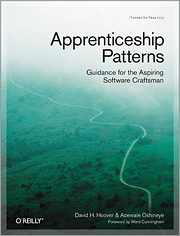

I'm the co-author of Apprenticeship Patterns: Guidance for the aspiring software craftsman.
- About the book
- Buy it from Amazon UK
- Buy it from Amazon US
- isbn.nu
- O'Reilly catalogue page
- Dave Hoover, my co-author
- The Twitter account for the book: http://twitter.com/apprenticeshipp
- The Facebook Fan Page for the book: http://www.facebook.com/pages/Apprenticeship-Patterns/156158987529
- News about the book
- October 2009: Dave tells the story of the book
- December 2008: Dave and I get interviewed by Pat Eyler
- Craft and learning
- The Craftsman by Richard Sennett
- Better by Atul Gawande
- Jonathan Livingston Seagull by Richard Bach
- The art of learning by Josh Waitzkin
- Mastery by George Leonard
- Web
- Javascript: The good parts by Douglas Crockford
- Object orientation
- Understanding object-oriented programming with java by Timothy A. Budd
- Object Oriented Design Heuristics by Arthur J. Riel
- Domain Driven Design by Eric Evans
- Growing Object-Oriented Software, Guided by Tests by Steve Freeman and Nat Pryce
- General
- The psychology of computer programming by Gerald M Weinberg
- The mythical man month by Fred Brooks
- The pragmatic programmer by Andrew Hunt & David Thomas
- Code complete by Steve McConnell
- Facts and fallacies of Software Engineering by Robert L. Glass
- Waltzing with bears by Tom DeMarco and Timothy Lister
- The logic of failure by Dietrich Dorner